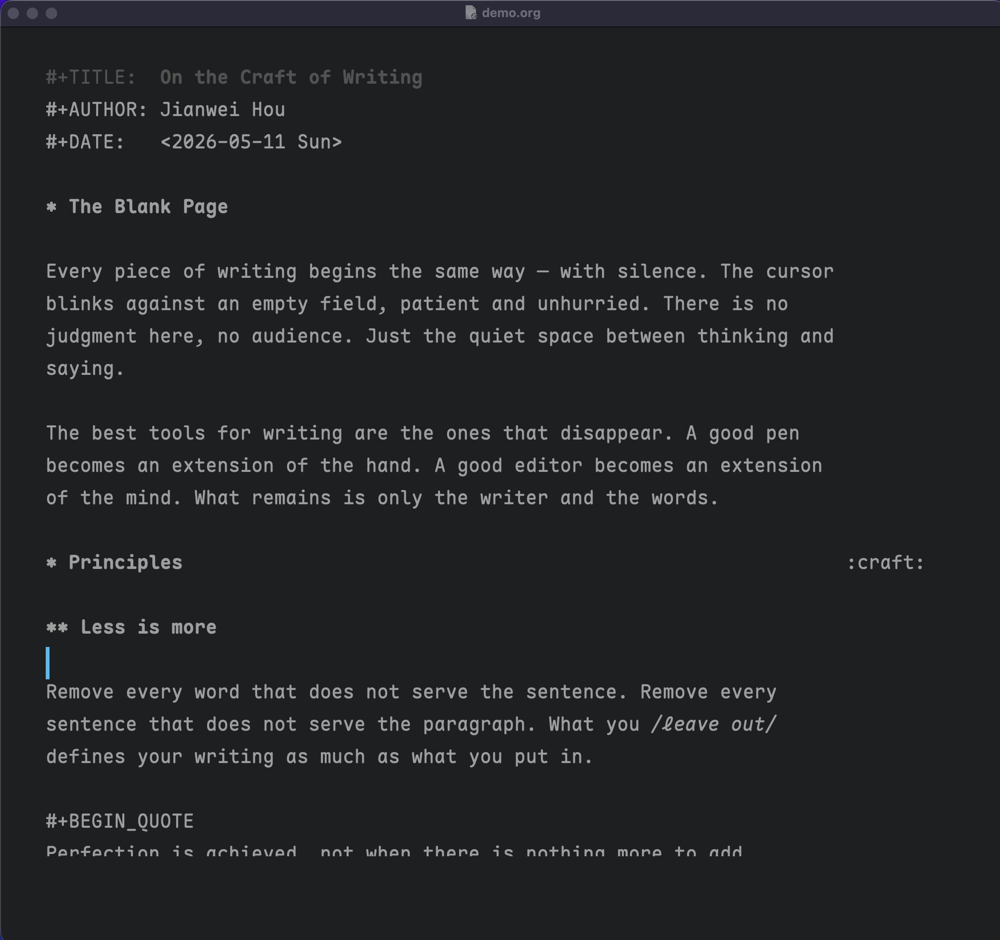
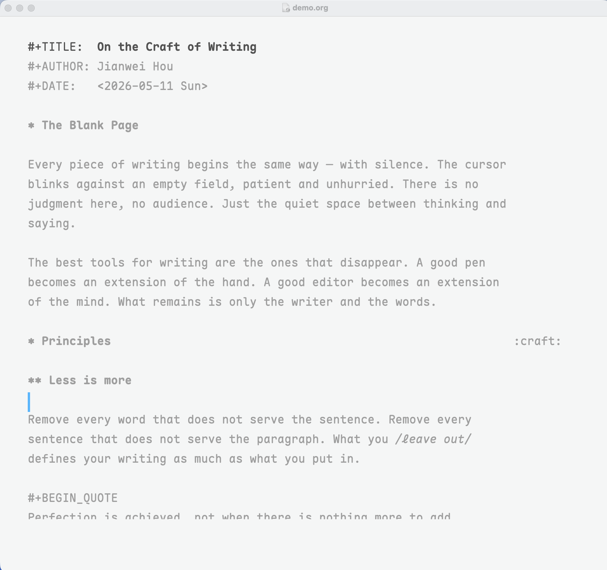

Distraction-free writing for Emacs, inspired by iA Writer. Monochromatic color theme with a signature blue cursor, zen writing modes, and visual-line focus dimming.


Color theme (zenwriter-theme.el)
Zen writing mode (zenwriter-mode.el)
zenwriter-mode (buffer-local) — olivetti centering + generous line spacingglobal-zenwriter-mode — full zen: loads theme, sets font, hides toolbar/scrollbar/menubar/modeline, disables org-bars and org-modern if present, enables zenwriter-mode in all buffers. Toggling off restores your previous themes and settings.Focus mode
zenwriter-focus-mode (buffer-local) — dims all text except the current visual lineglobal-zenwriter-focus-mode — focus mode in all buffersThe theme uses Maple Mono CN by default. Install it before using global-zenwriter-mode.
macOS (Homebrew):
brew install --cask font-maple-mono-cnManual download:
Download from Maple Font releases and install the MapleMono-CN-*.ttf files to your system fonts directory.
If you prefer a different font, set zenwriter-font-family before enabling the mode.
(use-package zenwriter-mode
:straight (zenwriter-mode
:type git
:host github
:repo "jhou1/zenwriter"
:files ("*.el"))
:commands (zenwriter-mode global-zenwriter-mode
zenwriter-focus-mode global-zenwriter-focus-mode)
:init
(add-to-list 'custom-theme-load-path
(expand-file-name "straight/repos/zenwriter-mode"
user-emacs-directory)))git clone https://github.com/jhou1/zenwriter /path/to/zenwriter-modeAdd to your init.el or .emacs:
(add-to-list 'custom-theme-load-path "/path/to/zenwriter-mode")
(add-to-list 'load-path "/path/to/zenwriter-mode")
(require 'zenwriter-mode);; Just the color theme
(load-theme 'zenwriter t)
;; Zen mode in the current buffer
(zenwriter-mode 1)
;; Full zen experience — all buffers, theme, font, hidden chrome
(global-zenwriter-mode 1)
;; Focus mode — dim everything except the current line
(global-zenwriter-focus-mode 1)Toggle off with the same commands (or pass -1). global-zenwriter-mode restores your previous themes and UI state when disabled.
| Variable | Default | Description |
|---|---|---|
zenwriter-font-family | "Maple Mono CN" | Font set by global-zenwriter-mode |
zenwriter-line-spacing | 8 | Extra line spacing in pixels |
zenwriter-body-width | 100 | Text body width in columns (olivetti) |
zenwriter-focus-dimmed-color | nil (auto) | Foreground color for dimmed text; when nil, reads from font-lock-comment-face |
Example:
(setq zenwriter-font-family "Iosevka")
(setq zenwriter-body-width 90)
(setq zenwriter-line-spacing 6)